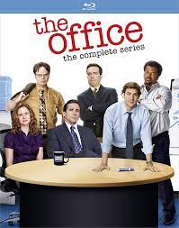
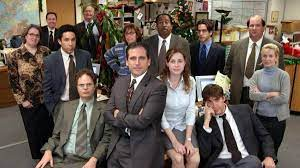
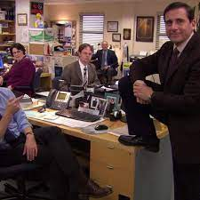

THE OFFICE

The Office foi criada com o objetivo de retratar a vida cotidiana dos funcionários de uma empresa americana de papelaria, através de uma mistura de comédia e drama. A série segue a vida dos funcionários da Dunder Mifflin, desde os altos e baixos de suas carreiras profissionais até as dinâmicas de suas vidas pessoais.


clique aqui para saber mais sobre a série